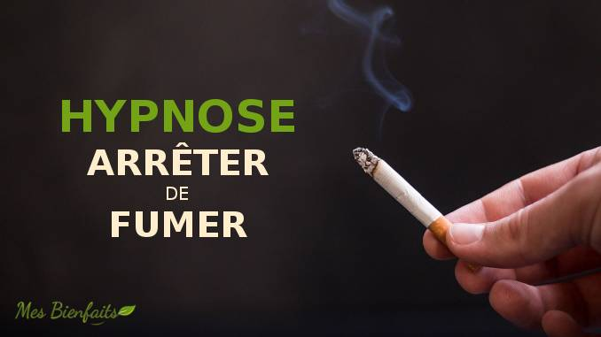

Hypnose tabac
Libérez-vous du tabac grâce à l’hypnose holistique
Vous souhaitez arrêter de fumer, mais vous craignez le manque ou la frustration ? L’hypnose holistique est une méthode douce et naturelle qui vous aide à vous libérer du tabac sereinement, en respectant votre rythme et votre équilibre intérieur.
Une seule séance peut suffire
Dans la majorité des cas, une séance d’hypnose holistique suffit pour se libérer du tabac. Cependant, si l’addiction est liée à une émotion, un stress ou une blessure plus profonde, nous prendrons le temps de travailler sur ces aspects ensemble.
L’objectif est d’aller à la source de la dépendance, et non seulement d’agir sur le geste d’arrêter.
Comment se déroule une séance ?
Contrairement aux idées reçues, vous gardez toujours le contrôle durant la séance. L’état hypnotique est un état naturel de conscience modifiée : un moment de détente profonde où votre esprit reste conscient, mais plus réceptif au changement.
Nous travaillons sur :
- les automatismes inconscients liés au geste de fumer,
- les croyances associées au tabac (« j’ai besoin d’une cigarette pour me détendre », « je ne peux pas m’en passer »),
- la libération émotionnelle liée à la dépendance,
- la reprogrammation positive du cerveau pour que le besoin disparaisse naturellement.
Les bienfaits d’arrêter de fumer
- 🌬️ Respiration plus fluide, énergie retrouvée
- 💖 Meilleur sommeil, teint plus lumineux
- 💰 Des économies importantes chaque mois
- 🌿 Fierté, liberté et confiance en vous
Dès votre première heure sans cigarette, votre cœur et votre tension commencent à se réguler. En quelques semaines, votre souffle s’améliore. Après un an, le risque de maladie cardiaque diminue déjà de moitié. Sur le long terme, le risque de cancer baisse significativement.
Arrêter de fumer, c’est prendre soin de vous, retrouver votre pouvoir personnel et vous offrir une nouvelle légèreté de vie.
Avec l’hypnose holistique, vous ne combattez pas la cigarette : vous vous en détachez naturellement, dans la douceur et la conscience.
✨ Et si c’était le bon moment pour respirer pleinement, naturellement ?
Tarif : 90 €
